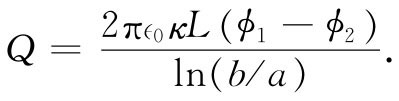

以前（在§3-4中）我们就曾讨论过一个例子——热流。设想有一大块材料，它无需均匀，也可以是在不同地方含有不同材质，而其内部温度是逐点变化的。这些温度变化的结果产生一股热流，由矢量h表示，这代表每秒通过垂直于流向的单位面积的热量。h的散度表示热量从该区域单位体积离开的速率：
▽·h=单位时间内从单位体积流出的热量.
当然，本来也可以将此式写成一积分形式——正如我们以前曾在静电学中用高斯定律处理问题那样——那就会说明：通过一个面的通量等于材料内部热能的变化率。我们不准备自找麻烦，在微分与积分形式之间把方程组变来变去，因为这种变换同静电学的变换一模一样。
在各个地方热的产生率或吸收率当然依问题的不同而异。例如，假设在材料内部有一个热源（也许是一个放射源，或是由电流加热的电阻器）。让我们把由这个源每秒在单位体积中所产生的热能叫作s。也可能还有转变成体积内其他类型的内能而引起的热能损失（或获得）。设u为单位体积的内能，则-du/dt也将是热能的一个“源”。于是我们便有
（12.5）
眼下不打算讨论其中事物随时间变化的完整方程，因为我们正在做静电模拟，这里并没有什么东西与时间有关。我们将仅仅考虑恒定热流 问题，其中有些恒定源已产生了一个平衡态。在这些场合下，
▽·h=s. （12.6）
当然，还必须用另一个方程来描述在各不同地方热是如何流动的。在许多种材料中，热流近似地正比于温度对位置的变化率：温差越大，热流越强，正如我们曾经见到的，热流这个矢量 与温度梯度成正比。比例常数K称为热导率 ，它代表该材料的一种性质。
h=-K▽T. （12.7）
如果材料的导热性能是随地点而改变的，那么K=K（x，y，z）就是一个位置函数［式（12.7）并不如表达热能守恒的式（12.5）那么基本，因为前者依赖于物质的特性］。现在我们若把式（12.7）代入式（12.6）中，便有
▽·（K▽T）=-s， （12.8）
这与式（12.4）在形式上完全相同。恒定热流问题与静电学问题相同 。热流矢量h对应电场E，而温度T则对应于ϕ。我们已经注意到，一个热源会产生一个按1/r变化的温度场和一个按1/r2 变化的热流。这不过是从静电学方面来的一种转译，即一个点电荷会产生一个按1/r变化的势和一个按1/r2 变化的电场。一般说来，我们能够跟解决静电学问题那样，容易地去解决恒定热流问题。
考虑一个简单例子。假设有一个半径为a、温度为T1 的圆筒，该温度由筒内所产生的热维持着（这可能是一根载电流的导线，或一根其中有蒸汽正在凝结的管道）。这个圆筒外面覆盖着一层绝缘材料的同心护套，这种材料的热导率为K。比方说，这绝缘套的外半径为b，套外的温度为T2 ［图12-1（a）］。我们要找出该导线、或蒸汽管、或在其轴心上的任何东西的热量损失率。设由长度为L的一段管道每秒所损失的总热量为G——这就是我们要尝试去求的。
如何才能求解这个问题呢？我们已有了上述微分方程，但是由于这些方程和静电学的相同，所以实际上就已解决了该数学问题。类似的电学问题是：一个半径为a的圆筒形导体处于势ϕ1 ，与处于势ϕ2 、而半径为b的另一个圆筒形导体分别隔离着，中间填充了一层同轴的电介质材料，如图12-1（b）所示，现在既然热流h对应于电场E，我们所要求的量G就对应于出自长度L的电场通量（换句话说，对应于在长度L [1] 上的电荷除以∈0 ）。我们已用高斯定律解决了静电学问题。对于热流问题，我们也按照相同的步骤来求解。
图12-1 （a）在一个圆筒状几何形体中的热流；（b）相应的电学问题
由对称性可知，h仅取决于与轴心间的距离r。所以我们包围管子作一个长为L、半径为r的高斯圆柱面。根据高斯定律，我们知道，热流h乘以该表面的面积2πrL便应等于其内部所产生的总热量，这就是我们所称的G：
解出G，得
这一结果完全对应于圆柱形电容器上的电荷
 [2]
问题相同，因而有相同的解。我们根据静电学知识，也知道一根隔热管道损失了多少热量。
现在来讨论热流的另一个例子。假设我们要知道位于地下离地表不远或在一大块金属表面附近的一个点热源周围的热流，这个定域热源也许是一个在地下爆炸了的原子弹所留下来的一个强烈热源，或许相当于在一大块铁中的一个小小放射源——总之会有种种可能性。
我们将处理这样一个理想化的问题，即一个强度为G的点热源置于一块无限大均匀材料——其热导率为K——的表面下距离为a的地方。我们将忽略材料外面空气的热导率，而希望求得这块材料表面上的温度分布。试问在材料表面上正对热源的那一点以及其他各处的温度是多少？
怎样解决这个问题呢？它很像静电学中这样一个问题，即在一平面边界两侧存在介电常量不同的两种材料。啊哈！或许它与边界附近的点电荷的情况相似，而该边界处在电介质与导体或类似的某些东西之间。让我们来看看，该表面附近的情况如何。这表面的物理条件是，h的法向分量为零 ，因为我们已假定没有热量流出板外，我们会问：在我们做过的哪一种静电学问题中会有这样的条件，即在表面处电场E（这类似于h）的法向分量为零 。不会有这种情况！
这是一件务必当心的事情。由于一些物理原因，可能在某一门学科中对数学条件产生了某些限制。因此，若我们仅仅对有限几种情况的微分方程进行分析，便可能会丢失在其他物理情况下能够发生的某些类型的解答。例如，没有一种材料的介电常量为零，而真空的热导率却确实等于零。所以对于完全绝热的物体，竟找不出一种静电的类似物来，然而，我们还是可以采用同样的方法 。不妨试行想象 ，假如 介电常量等于零，将发生什么情况（当然，在任一种实际情况中，介电常量总不会等于零的。但也许会有这么一种情况，即其中有一种材料其介电常量非常高 ，使得我们可以略去外面空气的介电常量）。
如何去找出与表面没有垂直分量的那种电场呢？也就是一种只与表面相切的电场。你会注意到，我们的问题与在一平面导体附近放置一个点电荷的问题刚好相反。那里曾要求有一个垂直 于表面的场，因为该导体全都处于相同的势，在电的问题中，我们通过设想在导电板后面有一个点电荷而发明了一种解法，可再引用那同一概念。试挑选一个“像源”，那将会自动地使在表面上场的法向分量为零。这种解法如图12-2所示。一个同号 而又等强的像源被置在该表面之上距离为a处，将使场始终切于材料表面。这两个源的法向分量互相抵消了。
图12-2 在一良热导体表面之下距离为a处有一个点热源，在其周围附近所产生的热流和等温面。材料外面显示的是一个像源
这样，我们的热流问题就得到了解决。通过直接类比，在各处的温度与两个相等点电荷产生的势相同。放在无限大媒质中一个单独点源G，在距离为r处所产生的温度为
当然，这只是ϕ=q/（4π∈0 r）的模拟。对于一个点源来说，若加上它的像源，所产生的温度就是
上式给出在大块材料内任一点的温度。图12-2中表示出几个等温面，同时也显示出一些h线，它可以由h=-K▽T获得。
我们原来的问题是要找出在该表面上的温度分布。对于表面上离轴心为ρ的一点，即在r1 = 处，就会有
这一函数在图上也表示了出来。刚好在热源正上方一点上的温度自然会高于其他较远的点的温度。这是地球物理学家们经常需要加以解决的那类问题。我们现在看到，这也是在电学方面已经解决了的同类事情。